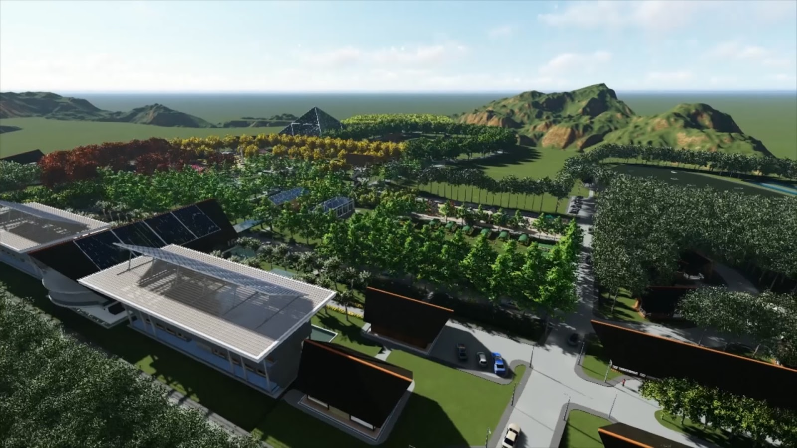
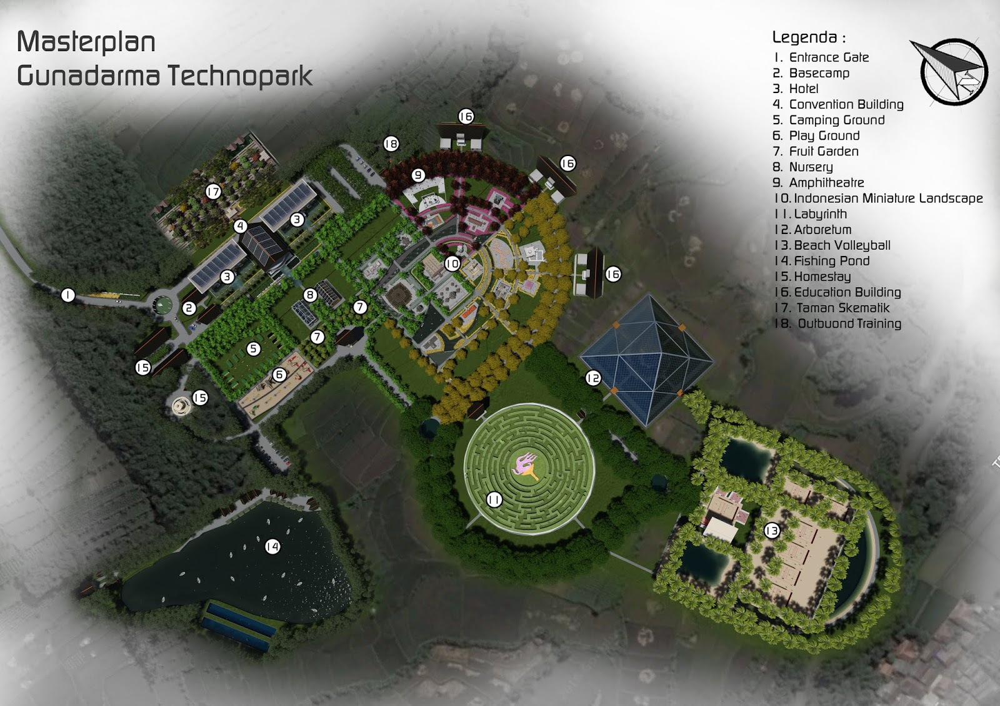

Gunadarma Technopark (GTP) merupakan komplek/kawasan pengembangan teknologi, manajemen, pendidikan dan bisnis secara terpadu. Lokasi GTP berada di Desa Jamali-Mulyasari, Kecamatan Mande, Kabupaten Cianjur. Kawasan tersebut bersifat holistic integrative untuk menunjang kegiatan pendidikan, pertanian terpadu, pariwisata dan pengembangan teknologi terpadu. Sehingga GTP ini nantinya akan menjadi icon sekaligus wujud dari multidisiplin ilmu yang ada di Universitas Gunadarma.
Informasi selengkapnya di Gunadarma TechnoparkMasterplan New Gunadarma TechnoparkMAKE IT BETTER
Panolens.js continues to be free and open-sourced library. If you think it's useful please give support :)